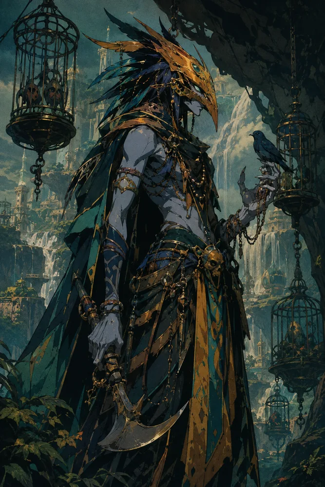
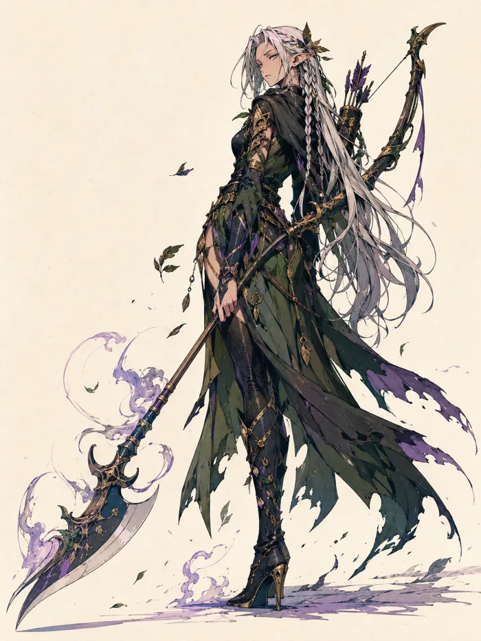
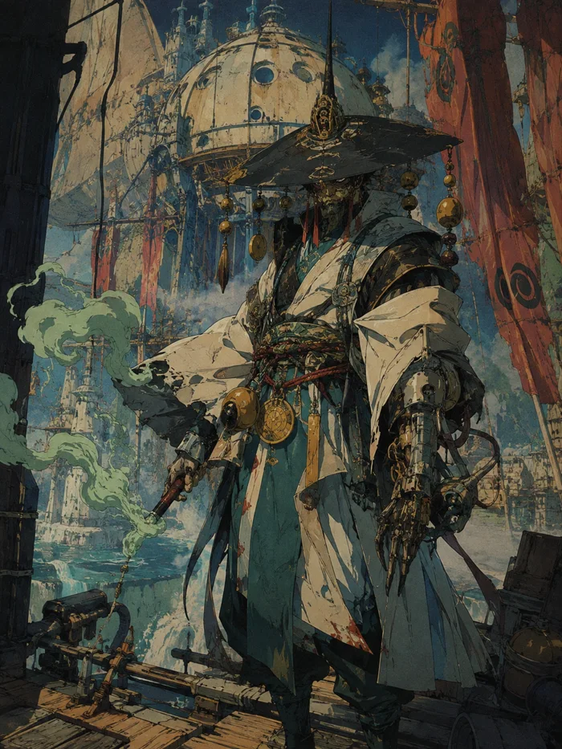
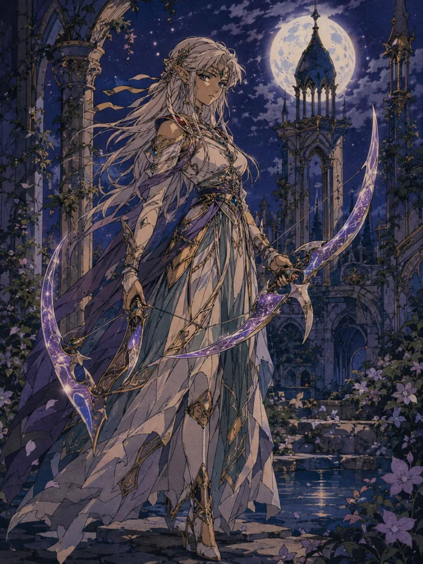
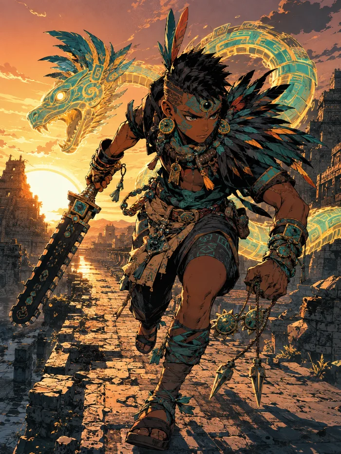
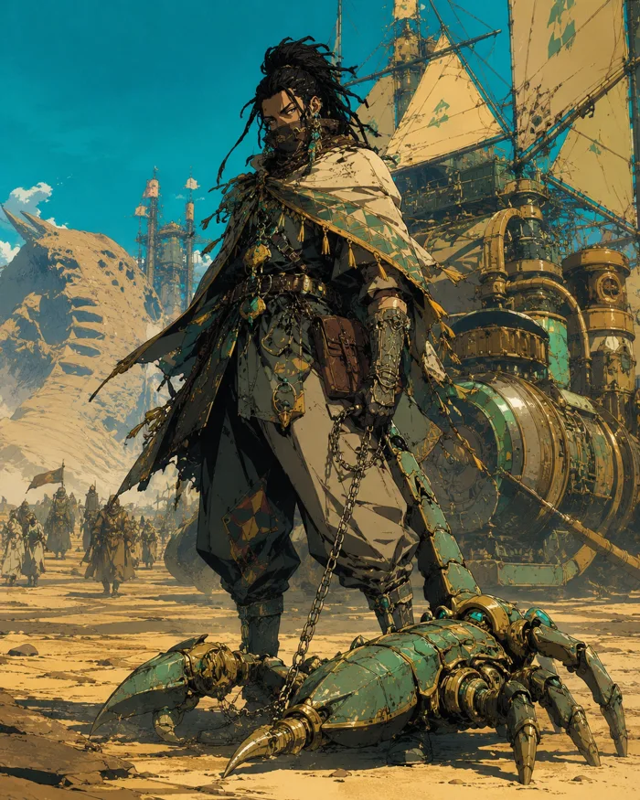
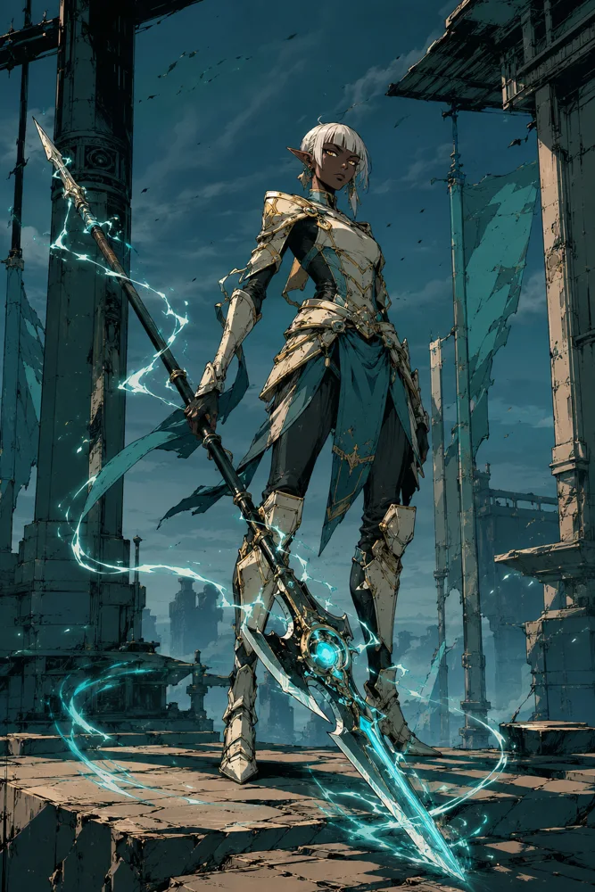
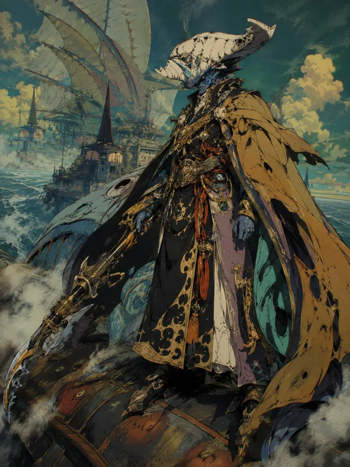
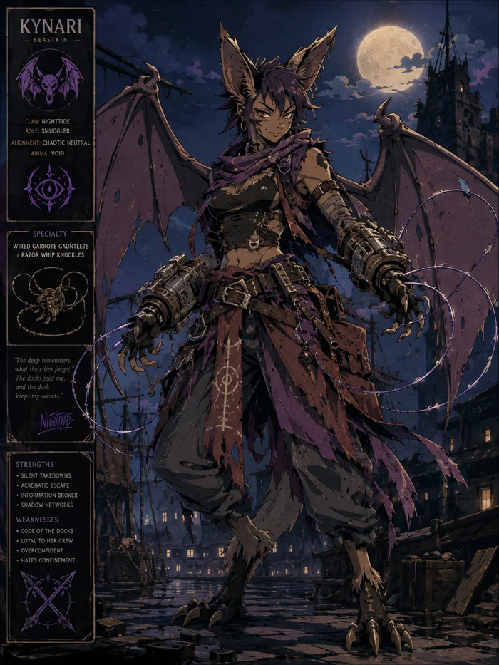
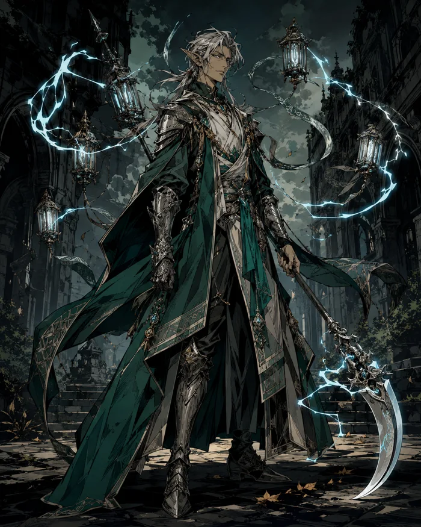

The Great Bloodline Reconstruction
Family Records They inherited the consequences of the same history.
This atlas follows the development blueprint, not a claim that the manuscripts have been rewritten. Confirmed means stated in this blueprint; chapter evidence remains to be supplied. Proposed ancestors, unresolved generations, taught traditions and nonbiological continuity stay separate.
Birthright = inherited power · Blessing = given power · Sentinel = recognized power. Similar names and abilities do not prove kinship. Forged records document deception, not reliable genealogy.
Find a family or individual
Solid border: blueprint-stated link · Dashed border: proposed / missing bridge · Violet: memory or identity distinction
Riven · Solar and Ash Paternal Solar and maternal Ash. Ahk Ra belongs to older dynastic history; the exact descent bridge is open.
Open question: How surviving Ara’Kai relatives connect to Khari’s parents.
Historical sequence Reading order only: these steps include people, institutions and missing generations. They are not all direct parent-child links.
Sahr-Tek Ara-Sahr Saren Taren / Nira Undocumented Ara’Kai generations Later solar dynastic relatives Khari Riven Ahk Ra Dynastic bridge unresolved; direct parentage not established Khari confirmed Riven Paternal Solar and maternal Ash. Ahk Ra belongs to older dynastic history; the exact descent bridge is open.
Established codex reference · CODEX1-01 Evidence and unresolved fields Record ID fr-riven Source Blueprint p. 2; book not specified; chapter not supplied Biological parents Khari, Amara Chosen / adoptive kin See separately labeled connections; other details not supplied Partners / offspring Only explicitly labeled parent links are established here; other details unknown Generation Not supplied Culture / realm Aru’Sahra / Ara’Kai; Amara’s Ash heritage Migration / Anima / empowerment / contracts / Pestilence Not supplied by this blueprint; not inferred Contradictions How surviving Ara’Kai relatives connect to Khari’s parents. confirmed Khari Existing family profile; source and unresolved ancestry retained.
Existing named dossier · TO-0896 Father → child Riven Dynastic bridge unresolved; direct parentage not established Ahk Ra Evidence and unresolved fields Record ID fr-khari Source Blueprint p. 2; book not specified; chapter not supplied Biological parents Not established in this record Chosen / adoptive kin See separately labeled connections; other details not supplied Partners / offspring Only explicitly labeled parent links are established here; other details unknown Generation Not supplied Culture / realm Aru’Sahra / Ara’Kai; Amara’s Ash heritage Migration / Anima / empowerment / contracts / Pestilence Not supplied by this blueprint; not inferred Contradictions How surviving Ara’Kai relatives connect to Khari’s parents. confirmed Amara Existing family profile; source and unresolved ancestry retained.
Existing named dossier · TO-0894 Evidence and unresolved fields Record ID fr-amara Source Blueprint p. 2; book not specified; chapter not supplied Biological parents Not established in this record Chosen / adoptive kin See separately labeled connections; other details not supplied Partners / offspring Only explicitly labeled parent links are established here; other details unknown Generation Not supplied Culture / realm Aru’Sahra / Ara’Kai; Amara’s Ash heritage Migration / Anima / empowerment / contracts / Pestilence Not supplied by this blueprint; not inferred Contradictions How surviving Ara’Kai relatives connect to Khari’s parents. confirmed Grandfather Khari Existing family profile; source and unresolved ancestry retained.
Existing labeled grandparent artwork from Riven’s folder · RIVEN-0430 · Source-sheet name: Ahkem D’Sun Grandparent / caregiver; personal name unconfirmed Riven Evidence and unresolved fields Record ID fr-grandfather-khari Source Blueprint p. 2; book not specified; chapter not supplied Biological parents Not established in this record Chosen / adoptive kin See separately labeled connections; other details not supplied Partners / offspring Only explicitly labeled parent links are established here; other details unknown Generation Not supplied Culture / realm Aru’Sahra / Ara’Kai; Amara’s Ash heritage Migration / Anima / empowerment / contracts / Pestilence Not supplied by this blueprint; not inferred Contradictions How surviving Ara’Kai relatives connect to Khari’s parents. confirmed Grandmother Khari Existing family profile; source and unresolved ancestry retained.
Existing labeled grandparent artwork from Riven’s folder · RIVEN-0430 · Source-sheet name: Meriten D’Sun Grandparent / caregiver; personal name unconfirmed Riven Evidence and unresolved fields Record ID fr-grandmother-khari Source Blueprint p. 2; book not specified; chapter not supplied Biological parents Not established in this record Chosen / adoptive kin See separately labeled connections; other details not supplied Partners / offspring Only explicitly labeled parent links are established here; other details unknown Generation Not supplied Culture / realm Aru’Sahra / Ara’Kai; Amara’s Ash heritage Migration / Anima / empowerment / contracts / Pestilence Not supplied by this blueprint; not inferred Contradictions How surviving Ara’Kai relatives connect to Khari’s parents. confirmed Sahr-Tek Ancestral rail in blueprint; sequence alone does not establish a direct parent-child relationship.
Proposed casting — identity / age details unverified · TO-2054 Evidence and unresolved fields Record ID fr-sahr-tek Source Blueprint p. 3; book not specified; chapter not supplied Biological parents Not established in this record Chosen / adoptive kin See separately labeled connections; other details not supplied Partners / offspring Only explicitly labeled parent links are established here; other details unknown Generation Not supplied Culture / realm Aru’Sahra / Ara’Kai; Amara’s Ash heritage Migration / Anima / empowerment / contracts / Pestilence Not supplied by this blueprint; not inferred Contradictions How surviving Ara’Kai relatives connect to Khari’s parents. confirmed Ara-Sahr Ancestral rail in blueprint; sequence alone does not establish a direct parent-child relationship.
Proposed casting — identity / age details unverified · TO-2039 Evidence and unresolved fields Record ID fr-ara-sahr Source Blueprint p. 3; book not specified; chapter not supplied Biological parents Not established in this record Chosen / adoptive kin See separately labeled connections; other details not supplied Partners / offspring Only explicitly labeled parent links are established here; other details unknown Generation Not supplied Culture / realm Aru’Sahra / Ara’Kai; Amara’s Ash heritage Migration / Anima / empowerment / contracts / Pestilence Not supplied by this blueprint; not inferred Contradictions How surviving Ara’Kai relatives connect to Khari’s parents. confirmed Saren Ancestral rail in blueprint; sequence alone does not establish a direct parent-child relationship.
Family visual reference only — not an individual portrait · CODEX1-01 Evidence and unresolved fields Record ID fr-saren Source Blueprint p. 3; book not specified; chapter not supplied Biological parents Not established in this record Chosen / adoptive kin See separately labeled connections; other details not supplied Partners / offspring Only explicitly labeled parent links are established here; other details unknown Generation Not supplied Culture / realm Aru’Sahra / Ara’Kai; Amara’s Ash heritage Migration / Anima / empowerment / contracts / Pestilence Not supplied by this blueprint; not inferred Contradictions How surviving Ara’Kai relatives connect to Khari’s parents. confirmed Taren / Nira Ancestral rail in blueprint; sequence alone does not establish a direct parent-child relationship.
Family visual reference only — not an individual portrait · CODEX1-01 Evidence and unresolved fields Record ID fr-taren-nira Source Blueprint p. 3; book not specified; chapter not supplied Biological parents Not established in this record Chosen / adoptive kin See separately labeled connections; other details not supplied Partners / offspring Only explicitly labeled parent links are established here; other details unknown Generation Not supplied Culture / realm Aru’Sahra / Ara’Kai; Amara’s Ash heritage Migration / Anima / empowerment / contracts / Pestilence Not supplied by this blueprint; not inferred Contradictions How surviving Ara’Kai relatives connect to Khari’s parents. inferred Undocumented Ara’Kai generations Ancestral rail in blueprint; sequence alone does not establish a direct parent-child relationship.
Family visual reference only — not an individual portrait · CODEX1-01 Evidence and unresolved fields Record ID fr-undocumented-ara-kai-generations Source Blueprint p. 3; book not specified; chapter not supplied Biological parents Not established in this record Chosen / adoptive kin See separately labeled connections; other details not supplied Partners / offspring Only explicitly labeled parent links are established here; other details unknown Generation Not supplied Culture / realm Aru’Sahra / Ara’Kai; Amara’s Ash heritage Migration / Anima / empowerment / contracts / Pestilence Not supplied by this blueprint; not inferred Contradictions How surviving Ara’Kai relatives connect to Khari’s parents. inferred Later solar dynastic relatives Ancestral rail in blueprint; sequence alone does not establish a direct parent-child relationship.
Family visual reference only — not an individual portrait · CODEX1-01 Evidence and unresolved fields Record ID fr-later-solar-dynastic-relatives Source Blueprint p. 3; book not specified; chapter not supplied Biological parents Not established in this record Chosen / adoptive kin See separately labeled connections; other details not supplied Partners / offspring Only explicitly labeled parent links are established here; other details unknown Generation Not supplied Culture / realm Aru’Sahra / Ara’Kai; Amara’s Ash heritage Migration / Anima / empowerment / contracts / Pestilence Not supplied by this blueprint; not inferred Contradictions How surviving Ara’Kai relatives connect to Khari’s parents. confirmed Ahk Ra
Pharaoh-style appearance concept — Ahk Ra remains unseen in story · TO-2201 Cousins; not parent and child Nefer-Tahi Dynastic bridge unresolved; direct parentage not established Khari Evidence and unresolved fields Record ID fr-ahk-ra Source Blueprint p. 3; book not specified; chapter not supplied Biological parents Not established in this record Chosen / adoptive kin See separately labeled connections; other details not supplied Partners / offspring Only explicitly labeled parent links are established here; other details unknown Generation Not supplied Culture / realm Aru’Sahra / Ara’Kai; Amara’s Ash heritage Migration / Anima / empowerment / contracts / Pestilence Not supplied by this blueprint; not inferred Contradictions How surviving Ara’Kai relatives connect to Khari’s parents. confirmed Nefer-Tahi
Proposed casting — identity / age details unverified · TO-2499 Evidence and unresolved fields Record ID fr-nefer-tahi Source Blueprint p. 3; book not specified; chapter not supplied Biological parents Tahi-Meret Chosen / adoptive kin See separately labeled connections; other details not supplied Partners / offspring Only explicitly labeled parent links are established here; other details unknown Generation Not supplied Culture / realm Aru’Sahra / Ara’Kai; Amara’s Ash heritage Migration / Anima / empowerment / contracts / Pestilence Not supplied by this blueprint; not inferred Contradictions How surviving Ara’Kai relatives connect to Khari’s parents. confirmed Tahi-Meret
Family visual reference only — not an individual portrait · CODEX1-01 Evidence and unresolved fields Record ID fr-tahi-meret Source Blueprint p. 3; book not specified; chapter not supplied Biological parents Not established in this record Chosen / adoptive kin See separately labeled connections; other details not supplied Partners / offspring Only explicitly labeled parent links are established here; other details unknown Generation Not supplied Culture / realm Aru’Sahra / Ara’Kai; Amara’s Ash heritage Migration / Anima / empowerment / contracts / Pestilence Not supplied by this blueprint; not inferred Contradictions How surviving Ara’Kai relatives connect to Khari’s parents. inferred Unknown Ash forebears
Family visual reference only — not an individual portrait · CODEX1-01 Missing maternal generations Amara Evidence and unresolved fields Record ID fr-unknown-ash-forebears Source Blueprint p. 3; book not specified; chapter not supplied Biological parents Not established in this record Chosen / adoptive kin See separately labeled connections; other details not supplied Partners / offspring Only explicitly labeled parent links are established here; other details unknown Generation Not supplied Culture / realm Aru’Sahra / Ara’Kai; Amara’s Ash heritage Migration / Anima / empowerment / contracts / Pestilence Not supplied by this blueprint; not inferred Contradictions How surviving Ara’Kai relatives connect to Khari’s parents. Yahia · Frost keepers Protective keeping becomes inherited practice. Early duties began as service and teaching.
Open question: Which household made Frost keeping hereditary, and when.
Historical sequence Reading order only: these steps include people, institutions and missing generations. They are not all direct parent-child links.
Vael Hrothe Sella / Orin Undocumented keeper generations Frost-Reaper / Yukimura institution Yahia
confirmed Yahia Protective keeping becomes inherited practice. Early duties began as service and teaching.
Established codex reference · CODEX1-06 Evidence and unresolved fields Record ID fr-yahia Source Blueprint p. 2; book not specified; chapter not supplied Biological parents Not established in this record Chosen / adoptive kin See separately labeled connections; other details not supplied Partners / offspring Only explicitly labeled parent links are established here; other details unknown Generation Not supplied Culture / realm Vael’Rime / Frost-Reapers Migration / Anima / empowerment / contracts / Pestilence Not supplied by this blueprint; not inferred Contradictions Which household made Frost keeping hereditary, and when. confirmed Vael Ancestral rail in blueprint; sequence alone does not establish a direct parent-child relationship.
Proposed casting — identity / age details unverified · TO-1832 Evidence and unresolved fields Record ID fr-vael Source Blueprint p. 3; book not specified; chapter not supplied Biological parents Not established in this record Chosen / adoptive kin See separately labeled connections; other details not supplied Partners / offspring Only explicitly labeled parent links are established here; other details unknown Generation Not supplied Culture / realm Vael’Rime / Frost-Reapers Migration / Anima / empowerment / contracts / Pestilence Not supplied by this blueprint; not inferred Contradictions Which household made Frost keeping hereditary, and when. confirmed Hrothe Ancestral rail in blueprint; sequence alone does not establish a direct parent-child relationship.
Proposed casting — identity / age details unverified · TO-1849 Evidence and unresolved fields Record ID fr-hrothe Source Blueprint p. 3; book not specified; chapter not supplied Biological parents Not established in this record Chosen / adoptive kin See separately labeled connections; other details not supplied Partners / offspring Only explicitly labeled parent links are established here; other details unknown Generation Not supplied Culture / realm Vael’Rime / Frost-Reapers Migration / Anima / empowerment / contracts / Pestilence Not supplied by this blueprint; not inferred Contradictions Which household made Frost keeping hereditary, and when. confirmed Sella / Orin Ancestral rail in blueprint; sequence alone does not establish a direct parent-child relationship.
Family visual reference only — not an individual portrait · CODEX1-06 Evidence and unresolved fields Record ID fr-sella-orin Source Blueprint p. 3; book not specified; chapter not supplied Biological parents Not established in this record Chosen / adoptive kin See separately labeled connections; other details not supplied Partners / offspring Only explicitly labeled parent links are established here; other details unknown Generation Not supplied Culture / realm Vael’Rime / Frost-Reapers Migration / Anima / empowerment / contracts / Pestilence Not supplied by this blueprint; not inferred Contradictions Which household made Frost keeping hereditary, and when. inferred Undocumented keeper generations Ancestral rail in blueprint; sequence alone does not establish a direct parent-child relationship.
Family visual reference only — not an individual portrait · CODEX1-06 Evidence and unresolved fields Record ID fr-undocumented-keeper-generations Source Blueprint p. 3; book not specified; chapter not supplied Biological parents Not established in this record Chosen / adoptive kin See separately labeled connections; other details not supplied Partners / offspring Only explicitly labeled parent links are established here; other details unknown Generation Not supplied Culture / realm Vael’Rime / Frost-Reapers Migration / Anima / empowerment / contracts / Pestilence Not supplied by this blueprint; not inferred Contradictions Which household made Frost keeping hereditary, and when. inferred Frost-Reaper / Yukimura institution Ancestral rail in blueprint; sequence alone does not establish a direct parent-child relationship.
Family visual reference only — not an individual portrait · CODEX1-06 Evidence and unresolved fields Record ID fr-frost-reaper-yukimura-institution Source Blueprint p. 3; book not specified; chapter not supplied Biological parents Not established in this record Chosen / adoptive kin See separately labeled connections; other details not supplied Partners / offspring Only explicitly labeled parent links are established here; other details unknown Generation Not supplied Culture / realm Vael’Rime / Frost-Reapers Migration / Anima / empowerment / contracts / Pestilence Not supplied by this blueprint; not inferred Contradictions Which household made Frost keeping hereditary, and when. Kaisel · Blood Courts Healing becomes dynastic blood-debt and sovereign discipline.
Open question: Which Crimson Divide branch directly precedes Kaisel.
Historical sequence Reading order only: these steps include people, institutions and missing generations. They are not all direct parent-child links.
Kessa Red-Coil Unnamed daughter of Kessa Oren Red-Coil Later descendants including Ilya Red Coil Houses Blood Courts Sovereign Clan Kaisel Kaisel Possible collateral Renewal association; no proven close kinship Lysandra confirmed Kaisel Healing becomes dynastic blood-debt and sovereign discipline.
Established codex reference · CODEX1-07 Possible collateral Renewal association; no proven close kinship Lysandra Evidence and unresolved fields Record ID fr-kaisel Source Blueprint p. 2; book not specified; chapter not supplied Biological parents Not established in this record Chosen / adoptive kin See separately labeled connections; other details not supplied Partners / offspring Only explicitly labeled parent links are established here; other details unknown Generation Not supplied Culture / realm Sanghavar / Red Coil / Blood Courts Migration / Anima / empowerment / contracts / Pestilence Not supplied by this blueprint; not inferred Contradictions Which Crimson Divide branch directly precedes Kaisel. confirmed Kessa Red-Coil Ancestral rail in blueprint; sequence alone does not establish a direct parent-child relationship.
Proposed casting — identity / age details unverified · TO-2045 Evidence and unresolved fields Record ID fr-kessa-red-coil Source Blueprint p. 3; book not specified; chapter not supplied Biological parents Not established in this record Chosen / adoptive kin See separately labeled connections; other details not supplied Partners / offspring Only explicitly labeled parent links are established here; other details unknown Generation Not supplied Culture / realm Sanghavar / Red Coil / Blood Courts Migration / Anima / empowerment / contracts / Pestilence Not supplied by this blueprint; not inferred Contradictions Which Crimson Divide branch directly precedes Kaisel. confirmed Unnamed daughter of Kessa Ancestral rail in blueprint; sequence alone does not establish a direct parent-child relationship.
Family visual reference only — not an individual portrait · CODEX1-07 Evidence and unresolved fields Record ID fr-unnamed-daughter-of-kessa Source Blueprint p. 3; book not specified; chapter not supplied Biological parents Not established in this record Chosen / adoptive kin See separately labeled connections; other details not supplied Partners / offspring Only explicitly labeled parent links are established here; other details unknown Generation Not supplied Culture / realm Sanghavar / Red Coil / Blood Courts Migration / Anima / empowerment / contracts / Pestilence Not supplied by this blueprint; not inferred Contradictions Which Crimson Divide branch directly precedes Kaisel. confirmed Oren Red-Coil Ancestral rail in blueprint; sequence alone does not establish a direct parent-child relationship.
Proposed casting — identity / age details unverified · TO-2086 Evidence and unresolved fields Record ID fr-oren-red-coil Source Blueprint p. 3; book not specified; chapter not supplied Biological parents Not established in this record Chosen / adoptive kin See separately labeled connections; other details not supplied Partners / offspring Only explicitly labeled parent links are established here; other details unknown Generation Not supplied Culture / realm Sanghavar / Red Coil / Blood Courts Migration / Anima / empowerment / contracts / Pestilence Not supplied by this blueprint; not inferred Contradictions Which Crimson Divide branch directly precedes Kaisel. inferred Later descendants including Ilya Ancestral rail in blueprint; sequence alone does not establish a direct parent-child relationship.
Family visual reference only — not an individual portrait · CODEX1-07 Evidence and unresolved fields Record ID fr-later-descendants-including-ilya Source Blueprint p. 3; book not specified; chapter not supplied Biological parents Not established in this record Chosen / adoptive kin See separately labeled connections; other details not supplied Partners / offspring Only explicitly labeled parent links are established here; other details unknown Generation Not supplied Culture / realm Sanghavar / Red Coil / Blood Courts Migration / Anima / empowerment / contracts / Pestilence Not supplied by this blueprint; not inferred Contradictions Which Crimson Divide branch directly precedes Kaisel. confirmed Red Coil Houses Ancestral rail in blueprint; sequence alone does not establish a direct parent-child relationship.
Family visual reference only — not an individual portrait · CODEX1-07 Evidence and unresolved fields Record ID fr-red-coil-houses Source Blueprint p. 3; book not specified; chapter not supplied Biological parents Not established in this record Chosen / adoptive kin See separately labeled connections; other details not supplied Partners / offspring Only explicitly labeled parent links are established here; other details unknown Generation Not supplied Culture / realm Sanghavar / Red Coil / Blood Courts Migration / Anima / empowerment / contracts / Pestilence Not supplied by this blueprint; not inferred Contradictions Which Crimson Divide branch directly precedes Kaisel. confirmed Blood Courts Ancestral rail in blueprint; sequence alone does not establish a direct parent-child relationship.
Family visual reference only — not an individual portrait · CODEX1-07 Evidence and unresolved fields Record ID fr-blood-courts Source Blueprint p. 3; book not specified; chapter not supplied Biological parents Not established in this record Chosen / adoptive kin See separately labeled connections; other details not supplied Partners / offspring Only explicitly labeled parent links are established here; other details unknown Generation Not supplied Culture / realm Sanghavar / Red Coil / Blood Courts Migration / Anima / empowerment / contracts / Pestilence Not supplied by this blueprint; not inferred Contradictions Which Crimson Divide branch directly precedes Kaisel. confirmed Sovereign Clan Ancestral rail in blueprint; sequence alone does not establish a direct parent-child relationship.
Family visual reference only — not an individual portrait · CODEX1-07 Evidence and unresolved fields Record ID fr-sovereign-clan Source Blueprint p. 3; book not specified; chapter not supplied Biological parents Not established in this record Chosen / adoptive kin See separately labeled connections; other details not supplied Partners / offspring Only explicitly labeled parent links are established here; other details unknown Generation Not supplied Culture / realm Sanghavar / Red Coil / Blood Courts Migration / Anima / empowerment / contracts / Pestilence Not supplied by this blueprint; not inferred Contradictions Which Crimson Divide branch directly precedes Kaisel. Arelian / Kirshino · Vantari Shared family line preserves decentralized lightning methods before Calibration. Arelian is the blueprint spelling; this site uses Arelion.
Open question: Darien’s generational bridge is proposed, not parentage.
confirmed Arelion Shared family line preserves decentralized lightning methods before Calibration. Arelian is the blueprint spelling; this site uses Arelion.
Established codex reference · CODEX1-02 Proposed ancestral family association; intervening generations unknown Darien Vantari Brothers; shared Vantari line Kirshino Evidence and unresolved fields Record ID fr-arelion Source Blueprint p. 2; book not specified; chapter not supplied Biological parents Not established in this record Chosen / adoptive kin See separately labeled connections; other details not supplied Partners / offspring Only explicitly labeled parent links are established here; other details unknown Generation Not supplied Culture / realm Storm Roads / Spire-Halls Migration / Anima / empowerment / contracts / Pestilence Not supplied by this blueprint; not inferred Contradictions Darien’s generational bridge is proposed, not parentage. confirmed Kirshino Existing family profile; source and unresolved ancestry retained.
Established codex reference · CODEX1-14 Brothers; shared Vantari line Arelion Evidence and unresolved fields Record ID fr-kirshino Source Blueprint p. 2; book not specified; chapter not supplied Biological parents Not established in this record Chosen / adoptive kin See separately labeled connections; other details not supplied Partners / offspring Only explicitly labeled parent links are established here; other details unknown Generation Not supplied Culture / realm Storm Roads / Spire-Halls Migration / Anima / empowerment / contracts / Pestilence Not supplied by this blueprint; not inferred Contradictions Darien’s generational bridge is proposed, not parentage. 
proposed Darien Vantari Vantari relay engineer
Proposed model casting — identity, age and costume unconfirmed · TO-2439 Proposed ancestral family association; intervening generations unknown Arelion Evidence and unresolved fields Record ID fr-darien-vantari Source Blueprint p. 3; book VI–VII; chapter not supplied Biological parents Not established in this record Chosen / adoptive kin See separately labeled connections; other details not supplied Partners / offspring Only explicitly labeled parent links are established here; other details unknown Generation Historical placement proposed; exact generation unknown Culture / realm Storm Roads / Spire-Halls Migration / Anima / empowerment / contracts / Pestilence Not supplied by this blueprint; not inferred Contradictions Darien’s generational bridge is proposed, not parentage. Scribs · Living Pattern Artisan ancestors safeguard contested archive records.
Open question: Maera’s historical archive-family link remains unresolved.
Seren Venn Proposed ancestral family association; intervening generations unknown Scribs confirmed Scribs Artisan ancestors safeguard contested archive records.
Established codex reference · CODEX1-05 Proposed ancestral family association; intervening generations unknown Seren Venn Evidence and unresolved fields Record ID fr-scribs Source Blueprint p. 2; book not specified; chapter not supplied Biological parents Not established in this record Chosen / adoptive kin See separately labeled connections; other details not supplied Partners / offspring Only explicitly labeled parent links are established here; other details unknown Generation Not supplied Culture / realm Elven Living Pattern / Sealed Memory Migration / Anima / empowerment / contracts / Pestilence Not supplied by this blueprint; not inferred Contradictions Maera’s historical archive-family link remains unresolved. confirmed Maera Existing family profile; source and unresolved ancestry retained.
Proposed casting · TO-1840 Evidence and unresolved fields Record ID fr-maera Source Blueprint p. 2; book not specified; chapter not supplied Biological parents Not established in this record Chosen / adoptive kin See separately labeled connections; other details not supplied Partners / offspring Only explicitly labeled parent links are established here; other details unknown Generation Not supplied Culture / realm Elven Living Pattern / Sealed Memory Migration / Anima / empowerment / contracts / Pestilence Not supplied by this blueprint; not inferred Contradictions Maera’s historical archive-family link remains unresolved. 
proposed Seren Venn Elven archival protector
Proposed model casting — identity, age and costume unconfirmed · TO-1854 Proposed ancestral family association; intervening generations unknown Scribs Evidence and unresolved fields Record ID fr-seren-venn Source Blueprint p. 3; book VI–X; chapter not supplied Biological parents Not established in this record Chosen / adoptive kin See separately labeled connections; other details not supplied Partners / offspring Only explicitly labeled parent links are established here; other details unknown Generation Historical placement proposed; exact generation unknown Culture / realm Elven Living Pattern / Sealed Memory Migration / Anima / empowerment / contracts / Pestilence Not supplied by this blueprint; not inferred Contradictions Maera’s historical archive-family link remains unresolved. Vaughn · Grey Meridian Refugee, adoption and erased records form separate layers of genealogical mystery.
Open question: Separate biological, adoptive and forged-record layers.
Eren Vale Proposed ancestral family association; intervening generations unknown Vaughn confirmed Vaughn Refugee, adoption and erased records form separate layers of genealogical mystery.
Established codex reference · CODEX1-04 Proposed ancestral family association; intervening generations unknown Eren Vale Evidence and unresolved fields Record ID fr-vaughn Source Blueprint p. 2; book not specified; chapter not supplied Biological parents Not established in this record Chosen / adoptive kin See separately labeled connections; other details not supplied Partners / offspring Only explicitly labeled parent links are established here; other details unknown Generation Not supplied Culture / realm Grey Meridian / Mirage Migration / Anima / empowerment / contracts / Pestilence Not supplied by this blueprint; not inferred Contradictions Separate biological, adoptive and forged-record layers. 
proposed Eren Vale Refugee identity-record custodian
Proposed model casting — identity, age and costume unconfirmed · TO-2431 Proposed ancestral family association; intervening generations unknown Vaughn Evidence and unresolved fields Record ID fr-eren-vale Source Blueprint p. 3; book VI–VII; chapter not supplied Biological parents Not established in this record Chosen / adoptive kin See separately labeled connections; other details not supplied Partners / offspring Only explicitly labeled parent links are established here; other details unknown Generation Historical placement proposed; exact generation unknown Culture / realm Grey Meridian / Mirage Migration / Anima / empowerment / contracts / Pestilence Not supplied by this blueprint; not inferred Contradictions Possible earlier name collision; chapter-level check required. Amelia · Lotus rootkeepers Healing and Veil stabilization are family traditions.
Open question: Seam Titan heritage may be biological, acquired or technological; descent unconfirmed.
confirmed Amelia Lotusveil Healing and Veil stabilization are family traditions.
Established codex reference · CODEX1-09 Proposed ancestral family association; intervening generations unknown Aelora Lotusveil Evidence and unresolved fields Record ID fr-amelia-lotusveil Source Blueprint p. 2; book not specified; chapter not supplied Biological parents Not established in this record Chosen / adoptive kin See separately labeled connections; other details not supplied Partners / offspring Only explicitly labeled parent links are established here; other details unknown Generation Not supplied Culture / realm Elven Lotus rootkeepers Migration / Anima / empowerment / contracts / Pestilence Not supplied by this blueprint; not inferred Contradictions Seam Titan heritage may be biological, acquired or technological; descent unconfirmed. 
proposed Aelora Lotusveil Rootkeeper healer
Proposed model casting — identity, age and costume unconfirmed · TO-2445 Proposed ancestral family association; intervening generations unknown Amelia Lotusveil Evidence and unresolved fields Record ID fr-aelora-lotusveil Source Blueprint p. 3; book VI–X; chapter not supplied Biological parents Not established in this record Chosen / adoptive kin See separately labeled connections; other details not supplied Partners / offspring Only explicitly labeled parent links are established here; other details unknown Generation Historical placement proposed; exact generation unknown Culture / realm Elven Lotus rootkeepers Migration / Anima / empowerment / contracts / Pestilence Not supplied by this blueprint; not inferred Contradictions Seam Titan heritage may be biological, acquired or technological; descent unconfirmed. Ixtli · Sun-Serpent Rescue-tracker roots diverge into Jackal surveillance.
Open question: Proposed historical family bridge requires chapter evidence.
Tecuani Proposed ancestral family association; intervening generations unknown Ixtli confirmed Ixtli Rescue-tracker roots diverge into Jackal surveillance.
Established codex reference · CODEX1-12 Proposed ancestral family association; intervening generations unknown Tecuani Evidence and unresolved fields Record ID fr-ixtli Source Blueprint p. 2; book not specified; chapter not supplied Biological parents Not established in this record Chosen / adoptive kin See separately labeled connections; other details not supplied Partners / offspring Only explicitly labeled parent links are established here; other details unknown Generation Not supplied Culture / realm Sun-Serpent / Nine Suns Migration / Anima / empowerment / contracts / Pestilence Not supplied by this blueprint; not inferred Contradictions Proposed historical family bridge requires chapter evidence. 
proposed Tecuani Sun-Serpent dissenter and tracker
Proposed model casting — identity, age and costume unconfirmed · TO-2449 Proposed ancestral family association; intervening generations unknown Ixtli Evidence and unresolved fields Record ID fr-tecuani Source Blueprint p. 3; book VIII; chapter not supplied Biological parents Not established in this record Chosen / adoptive kin See separately labeled connections; other details not supplied Partners / offspring Only explicitly labeled parent links are established here; other details unknown Generation Historical placement proposed; exact generation unknown Culture / realm Sun-Serpent / Nine Suns Migration / Anima / empowerment / contracts / Pestilence Not supplied by this blueprint; not inferred Contradictions Proposed historical family bridge requires chapter evidence. Sanaa · Funeral testimony Funeral registrars preserve names of erased victims.
Open question: Maren’s placement and family bridge await approval.
Maren Proposed ancestral family association; intervening generations unknown Sanaa confirmed Sanaa Funeral registrars preserve names of erased victims.
Established codex reference · CODEX1-10 Proposed ancestral family association; intervening generations unknown Maren Evidence and unresolved fields Record ID fr-sanaa Source Blueprint p. 2; book not specified; chapter not supplied Biological parents Not established in this record Chosen / adoptive kin See separately labeled connections; other details not supplied Partners / offspring Only explicitly labeled parent links are established here; other details unknown Generation Not supplied Culture / realm Funeral testimony / Nomads Migration / Anima / empowerment / contracts / Pestilence Not supplied by this blueprint; not inferred Contradictions Maren’s placement and family bridge await approval. 
proposed Maren Restoration funeral registrar
Proposed model casting — identity, age and costume unconfirmed · TO-2450 Proposed ancestral family association; intervening generations unknown Sanaa Evidence and unresolved fields Record ID fr-maren Source Blueprint p. 3; book VII; chapter not supplied Biological parents Not established in this record Chosen / adoptive kin See separately labeled connections; other details not supplied Partners / offspring Only explicitly labeled parent links are established here; other details unknown Generation Historical placement proposed; exact generation unknown Culture / realm Funeral testimony / Nomads Migration / Anima / empowerment / contracts / Pestilence Not supplied by this blueprint; not inferred Contradictions Maren’s placement and family bridge await approval. Nia · Forge networks Engineering and family tradition are documented separately from supernatural inheritance.
Open question: Forge Titan blood or alteration is unverified. Ena Ferrum is not automatically Ena Pellis.
Ena Ferrum Proposed ancestral family association; intervening generations unknown Nia confirmed Nia Engineering and family tradition are documented separately from supernatural inheritance.
Established codex reference · CODEX1-11 Proposed ancestral family association; intervening generations unknown Ena Ferrum Evidence and unresolved fields Record ID fr-nia Source Blueprint p. 2; book not specified; chapter not supplied Biological parents Not established in this record Chosen / adoptive kin See separately labeled connections; other details not supplied Partners / offspring Only explicitly labeled parent links are established here; other details unknown Generation Not supplied Culture / realm Titan repairs / forge networks Migration / Anima / empowerment / contracts / Pestilence Not supplied by this blueprint; not inferred Contradictions Forge Titan blood or alteration is unverified. Ena Ferrum is not automatically Ena Pellis. 
proposed Ena Ferrum Independent forge engineer
Proposed model casting — identity, age and costume unconfirmed · TO-2462 Proposed ancestral family association; intervening generations unknown Nia Evidence and unresolved fields Record ID fr-ena-ferrum Source Blueprint p. 3; book VI–VII; chapter not supplied Biological parents Not established in this record Chosen / adoptive kin See separately labeled connections; other details not supplied Partners / offspring Only explicitly labeled parent links are established here; other details unknown Generation Historical placement proposed; exact generation unknown Culture / realm Titan repairs / forge networks Migration / Anima / empowerment / contracts / Pestilence Not supplied by this blueprint; not inferred Contradictions Forge Titan blood or alteration is unverified. Ena Ferrum is not automatically Ena Pellis. Asha Khemet · Witness law A legal and witness household. Modern Asha is distinct from ancient Asha-of-Nine-Skins.
Open question: No proven ancient-to-modern biological bridge. Haddon Khemet must not overwrite earlier Haddon occurrences.
Historical sequence Reading order only: these steps include people, institutions and missing generations. They are not all direct parent-child links.
Sava of the Nine Pelts Ilun Unnamed daughter of Ilun Asha-of-Nine-Skins Haddon Khemet Proposed ancestral family association; intervening generations unknown Asha Oska Earlier ancestral rail; junction with Sava’s line open Rill confirmed Asha A legal and witness household. Modern Asha is distinct from ancient Asha-of-Nine-Skins.
Established codex reference · CODEX1-08 Evidence and unresolved fields Record ID fr-asha Source Blueprint p. 2; book not specified; chapter not supplied Biological parents Not established in this record Chosen / adoptive kin See separately labeled connections; other details not supplied Partners / offspring Only explicitly labeled parent links are established here; other details unknown Generation Not supplied Culture / realm Khemet Kynari law / Witness Migration / Anima / empowerment / contracts / Pestilence Not supplied by this blueprint; not inferred Contradictions No proven ancient-to-modern biological bridge. Haddon Khemet must not overwrite earlier Haddon occurrences. 
proposed Haddon Khemet Kynari adjudicator
Proposed model casting — identity, age and costume unconfirmed · TO-2481 Proposed ancestral family association; intervening generations unknown Asha Evidence and unresolved fields Record ID fr-haddon-khemet Source Blueprint p. 3; book III–VII; chapter not supplied Biological parents Not established in this record Chosen / adoptive kin See separately labeled connections; other details not supplied Partners / offspring Only explicitly labeled parent links are established here; other details unknown Generation Historical placement proposed; exact generation unknown Culture / realm Khemet Kynari law / Witness Migration / Anima / empowerment / contracts / Pestilence Not supplied by this blueprint; not inferred Contradictions No proven ancient-to-modern biological bridge. Haddon Khemet must not overwrite earlier Haddon occurrences. confirmed Sava of the Nine Pelts Ancestral rail in blueprint; sequence alone does not establish a direct parent-child relationship.
Proposed casting — identity / age details unverified · TO-2227 Missing ancestral junction Rill Evidence and unresolved fields Record ID fr-sava-of-the-nine-pelts Source Blueprint p. 3; book not specified; chapter not supplied Biological parents Not established in this record Chosen / adoptive kin See separately labeled connections; other details not supplied Partners / offspring Only explicitly labeled parent links are established here; other details unknown Generation Not supplied Culture / realm Khemet Kynari law / Witness Migration / Anima / empowerment / contracts / Pestilence Not supplied by this blueprint; not inferred Contradictions No proven ancient-to-modern biological bridge. Haddon Khemet must not overwrite earlier Haddon occurrences. confirmed Ilun Ancestral rail in blueprint; sequence alone does not establish a direct parent-child relationship.
Design reference only — child-age depiction not established · TO-1884 Evidence and unresolved fields Record ID fr-ilun Source Blueprint p. 3; book not specified; chapter not supplied Biological parents Not established in this record Chosen / adoptive kin See separately labeled connections; other details not supplied Partners / offspring Only explicitly labeled parent links are established here; other details unknown Generation Not supplied Culture / realm Khemet Kynari law / Witness Migration / Anima / empowerment / contracts / Pestilence Not supplied by this blueprint; not inferred Contradictions No proven ancient-to-modern biological bridge. Haddon Khemet must not overwrite earlier Haddon occurrences. confirmed Unnamed daughter of Ilun Ancestral rail in blueprint; sequence alone does not establish a direct parent-child relationship.
Family visual reference only — not an individual portrait · CODEX1-08 Evidence and unresolved fields Record ID fr-unnamed-daughter-of-ilun Source Blueprint p. 3; book not specified; chapter not supplied Biological parents Not established in this record Chosen / adoptive kin See separately labeled connections; other details not supplied Partners / offspring Only explicitly labeled parent links are established here; other details unknown Generation Not supplied Culture / realm Khemet Kynari law / Witness Migration / Anima / empowerment / contracts / Pestilence Not supplied by this blueprint; not inferred Contradictions No proven ancient-to-modern biological bridge. Haddon Khemet must not overwrite earlier Haddon occurrences. confirmed Asha-of-Nine-Skins Ancestral rail in blueprint; sequence alone does not establish a direct parent-child relationship.
Proposed casting — identity / age details unverified · TO-1887 Distinct individuals; no proven descent Asha Evidence and unresolved fields Record ID fr-asha-of-nine-skins Source Blueprint p. 3; book not specified; chapter not supplied Biological parents Not established in this record Chosen / adoptive kin See separately labeled connections; other details not supplied Partners / offspring Only explicitly labeled parent links are established here; other details unknown Generation Not supplied Culture / realm Khemet Kynari law / Witness Migration / Anima / empowerment / contracts / Pestilence Not supplied by this blueprint; not inferred Contradictions No proven ancient-to-modern biological bridge. Haddon Khemet must not overwrite earlier Haddon occurrences. confirmed Oska
Proposed casting — identity / age details unverified · TO-1946 Earlier ancestral rail; junction with Sava’s line open Rill Evidence and unresolved fields Record ID fr-oska Source Blueprint p. 3; book not specified; chapter not supplied Biological parents Not established in this record Chosen / adoptive kin See separately labeled connections; other details not supplied Partners / offspring Only explicitly labeled parent links are established here; other details unknown Generation Not supplied Culture / realm Khemet Kynari law / Witness Migration / Anima / empowerment / contracts / Pestilence Not supplied by this blueprint; not inferred Contradictions No proven ancient-to-modern biological bridge. Haddon Khemet must not overwrite earlier Haddon occurrences. confirmed Rill
Design reference only — child-age depiction not established · TO-1868 Evidence and unresolved fields Record ID fr-rill Source Blueprint p. 3; book not specified; chapter not supplied Biological parents Not established in this record Chosen / adoptive kin See separately labeled connections; other details not supplied Partners / offspring Only explicitly labeled parent links are established here; other details unknown Generation Not supplied Culture / realm Khemet Kynari law / Witness Migration / Anima / empowerment / contracts / Pestilence Not supplied by this blueprint; not inferred Contradictions No proven ancient-to-modern biological bridge. Haddon Khemet must not overwrite earlier Haddon occurrences. Veyr sisters · Moon Road Mixed households transmit kinship and taught practices separately.
Open question: Biology, chronology and any marriage across the Moon-Road spans remain unverified.
Historical sequence Reading order only: these steps include people, institutions and missing generations. They are not all direct parent-child links.
Lira and Rell’s household Later human Moon-Ward traditions Lunari instruction Modern Veyr households
confirmed Celestine Veyr Mixed households transmit kinship and taught practices separately.
Established codex reference · CODEX1-17 Evidence and unresolved fields Record ID fr-celestine-veyr Source Blueprint p. 2; book not specified; chapter not supplied Biological parents Not established in this record Chosen / adoptive kin See separately labeled connections; other details not supplied Partners / offspring Only explicitly labeled parent links are established here; other details unknown Generation Not supplied Culture / realm Caelune / Moon-Road / Moon-Ward Migration / Anima / empowerment / contracts / Pestilence Not supplied by this blueprint; not inferred Contradictions Biology, chronology and any marriage across the Moon-Road spans remain unverified. confirmed Seraphine Veyr Existing family profile; source and unresolved ancestry retained.
Established codex reference · CODEX1-18 Evidence and unresolved fields Record ID fr-seraphine-veyr Source Blueprint p. 2; book not specified; chapter not supplied Biological parents Not established in this record Chosen / adoptive kin See separately labeled connections; other details not supplied Partners / offspring Only explicitly labeled parent links are established here; other details unknown Generation Not supplied Culture / realm Caelune / Moon-Road / Moon-Ward Migration / Anima / empowerment / contracts / Pestilence Not supplied by this blueprint; not inferred Contradictions Biology, chronology and any marriage across the Moon-Road spans remain unverified. confirmed Maribel Veyr Existing family profile; source and unresolved ancestry retained.
Established codex reference · CODEX1-19 Evidence and unresolved fields Record ID fr-maribel-veyr Source Blueprint p. 2; book not specified; chapter not supplied Biological parents Not established in this record Chosen / adoptive kin See separately labeled connections; other details not supplied Partners / offspring Only explicitly labeled parent links are established here; other details unknown Generation Not supplied Culture / realm Caelune / Moon-Road / Moon-Ward Migration / Anima / empowerment / contracts / Pestilence Not supplied by this blueprint; not inferred Contradictions Biology, chronology and any marriage across the Moon-Road spans remain unverified. inferred Lira and Rell’s household Ancestral rail in blueprint; sequence alone does not establish a direct parent-child relationship.
Family visual reference only — not an individual portrait · CODEX1-17 Evidence and unresolved fields Record ID fr-lira-and-rell-s-household Source Blueprint p. 3; book not specified; chapter not supplied Biological parents Not established in this record Chosen / adoptive kin See separately labeled connections; other details not supplied Partners / offspring Only explicitly labeled parent links are established here; other details unknown Generation Not supplied Culture / realm Caelune / Moon-Road / Moon-Ward Migration / Anima / empowerment / contracts / Pestilence Not supplied by this blueprint; not inferred Contradictions Biology, chronology and any marriage across the Moon-Road spans remain unverified. inferred Later human Moon-Ward traditions Ancestral rail in blueprint; sequence alone does not establish a direct parent-child relationship.
Family visual reference only — not an individual portrait · CODEX1-17 Evidence and unresolved fields Record ID fr-later-human-moon-ward-traditions Source Blueprint p. 3; book not specified; chapter not supplied Biological parents Not established in this record Chosen / adoptive kin See separately labeled connections; other details not supplied Partners / offspring Only explicitly labeled parent links are established here; other details unknown Generation Not supplied Culture / realm Caelune / Moon-Road / Moon-Ward Migration / Anima / empowerment / contracts / Pestilence Not supplied by this blueprint; not inferred Contradictions Biology, chronology and any marriage across the Moon-Road spans remain unverified. inferred Lunari instruction Ancestral rail in blueprint; sequence alone does not establish a direct parent-child relationship.
Family visual reference only — not an individual portrait · CODEX1-17 Evidence and unresolved fields Record ID fr-lunari-instruction Source Blueprint p. 3; book not specified; chapter not supplied Biological parents Not established in this record Chosen / adoptive kin See separately labeled connections; other details not supplied Partners / offspring Only explicitly labeled parent links are established here; other details unknown Generation Not supplied Culture / realm Caelune / Moon-Road / Moon-Ward Migration / Anima / empowerment / contracts / Pestilence Not supplied by this blueprint; not inferred Contradictions Biology, chronology and any marriage across the Moon-Road spans remain unverified. inferred Modern Veyr households Ancestral rail in blueprint; sequence alone does not establish a direct parent-child relationship.
Family visual reference only — not an individual portrait · CODEX1-17 Evidence and unresolved fields Record ID fr-modern-veyr-households Source Blueprint p. 3; book not specified; chapter not supplied Biological parents Not established in this record Chosen / adoptive kin See separately labeled connections; other details not supplied Partners / offspring Only explicitly labeled parent links are established here; other details unknown Generation Not supplied Culture / realm Caelune / Moon-Road / Moon-Ward Migration / Anima / empowerment / contracts / Pestilence Not supplied by this blueprint; not inferred Contradictions Biology, chronology and any marriage across the Moon-Road spans remain unverified. Elara · Ashveil Earlier proposed Elyra Ashveil is distinct from modern Elara.
Open question: Exact identities and chronology require reconciliation.
confirmed Elara Earlier proposed Elyra Ashveil is distinct from modern Elara.
Established codex reference · CODEX1-16 Proposed ancestral family association; intervening generations unknown Elyra Ashveil Evidence and unresolved fields Record ID fr-elara Source Blueprint p. 2; book not specified; chapter not supplied Biological parents Not established in this record Chosen / adoptive kin See separately labeled connections; other details not supplied Partners / offspring Only explicitly labeled parent links are established here; other details unknown Generation Not supplied Culture / realm Vael’Thyr / Ashveil Migration / Anima / empowerment / contracts / Pestilence Not supplied by this blueprint; not inferred Contradictions Exact identities and chronology require reconciliation. 
proposed Elyra Ashveil Earlier Vael’Thyr survivor
Proposed model casting — identity, age and costume unconfirmed · TO-2446 Proposed ancestral family association; intervening generations unknown Elara Evidence and unresolved fields Record ID fr-elyra-ashveil Source Blueprint p. 3; book X; chapter not supplied Biological parents Not established in this record Chosen / adoptive kin See separately labeled connections; other details not supplied Partners / offspring Only explicitly labeled parent links are established here; other details unknown Generation Historical placement proposed; exact generation unknown Culture / realm Vael’Thyr / Ashveil Migration / Anima / empowerment / contracts / Pestilence Not supplied by this blueprint; not inferred Contradictions Earlier site attributes the Book X survivor directly to Elara. Blueprint distinguishes proposed Elyra; manuscripts unchanged. Lysandra · Renewal A proposed collateral healing line, independent from Kaisel’s direct house.
Open question: A close biological relationship to Kaisel is not established.
confirmed Lysandra A proposed collateral healing line, independent from Kaisel’s direct house.
Established codex reference · CODEX1-13 Proposed ancestral family association; intervening generations unknown Selene of Renewal Possible collateral Renewal association; no proven close kinship Kaisel Evidence and unresolved fields Record ID fr-lysandra Source Blueprint p. 2; book not specified; chapter not supplied Biological parents Not established in this record Chosen / adoptive kin See separately labeled connections; other details not supplied Partners / offspring Only explicitly labeled parent links are established here; other details unknown Generation Not supplied Culture / realm Sanghavar Renewal Migration / Anima / empowerment / contracts / Pestilence Not supplied by this blueprint; not inferred Contradictions A close biological relationship to Kaisel is not established. 
proposed Selene of Renewal Crimson Renewal healer
Proposed model casting — identity, age and costume unconfirmed · TO-2478 Proposed ancestral family association; intervening generations unknown Lysandra Evidence and unresolved fields Record ID fr-selene-of-renewal Source Blueprint p. 4; book X; chapter not supplied Biological parents Not established in this record Chosen / adoptive kin See separately labeled connections; other details not supplied Partners / offspring Only explicitly labeled parent links are established here; other details unknown Generation Historical placement proposed; exact generation unknown Culture / realm Sanghavar Renewal Migration / Anima / empowerment / contracts / Pestilence Not supplied by this blueprint; not inferred Contradictions A close biological relationship to Kaisel is not established. Gingey · Memory and rebirth Nonbiological continuity of personhood and memory. Original General Gingey remains a distinct person.
Open question: Rebirth and memory must never be rendered as mortal parentage.
confirmed Gingey / Aethernox Nonbiological continuity of personhood and memory. Original General Gingey remains a distinct person.
Established codex reference · CODEX1-03 Evidence and unresolved fields Record ID fr-gingey-aethernox Source Blueprint p. 2; book not specified; chapter not supplied Biological parents Not established in this record Chosen / adoptive kin See separately labeled connections; other details not supplied Partners / offspring Only explicitly labeled parent links are established here; other details unknown Generation Not supplied Culture / realm Aethernox / Halo Engine Migration / Anima / empowerment / contracts / Pestilence Not supplied by this blueprint; not inferred Contradictions Rebirth and memory must never be rendered as mortal parentage. confirmed Original General Gingey
Family visual reference only — not an individual portrait · CODEX1-03 Evidence and unresolved fields Record ID fr-original-general-gingey Source Blueprint p. 2; book not specified; chapter not supplied Biological parents Not established in this record Chosen / adoptive kin See separately labeled connections; other details not supplied Partners / offspring Only explicitly labeled parent links are established here; other details unknown Generation Not supplied Culture / realm Aethernox / Halo Engine Migration / Anima / empowerment / contracts / Pestilence Not supplied by this blueprint; not inferred Contradictions Rebirth and memory must never be rendered as mortal parentage. confirmed Aethernox
Family visual reference only — not an individual portrait · CODEX1-03 Evidence and unresolved fields Record ID fr-aethernox Source Blueprint p. 2; book not specified; chapter not supplied Biological parents Not established in this record Chosen / adoptive kin See separately labeled connections; other details not supplied Partners / offspring Only explicitly labeled parent links are established here; other details unknown Generation Not supplied Culture / realm Aethernox / Halo Engine Migration / Anima / empowerment / contracts / Pestilence Not supplied by this blueprint; not inferred Contradictions Rebirth and memory must never be rendered as mortal parentage. confirmed The Halo Engine
Proposed casting — identity / age details unverified · TO-1883 Evidence and unresolved fields Record ID fr-the-halo-engine Source Blueprint p. 2; book not specified; chapter not supplied Biological parents Not established in this record Chosen / adoptive kin See separately labeled connections; other details not supplied Partners / offspring Only explicitly labeled parent links are established here; other details unknown Generation Not supplied Culture / realm Aethernox / Halo Engine Migration / Anima / empowerment / contracts / Pestilence Not supplied by this blueprint; not inferred Contradictions Rebirth and memory must never be rendered as mortal parentage. Historical integration · Books I–XI and the modern saga I · Unblooded Early Kynari families; Aethernox’s personhood is not biological ancestry. II · The Open Hand Public Blessing, recognition and contested Mandates; no invented ancestry. III · Inheritance Mixed households, schools, consent law; Khemet and Moon-Road possibilities. IV · The Continuance Solar, Frost and Blood separation; documented generations. V · Hollow Displacement, lost records and identity changes; preserve Hollow Family roles. VI · Titanfall Vantari, Elven, Meridian, technical and healing-network candidates. VII · Crossroads Restoration registries, independent forges, roadkeepers and archive witnesses. VIII · The Walking Star Ahk Ra royal relatives, scattered lineages, Sun-Serpent and Eclipse Registry. IX · Red Autumn Ancient Kynari losses and dynastic records; later Observer account separate. X · Pale Choir Veyr, Blood Renewal, Ashveil and clandestine archive families. XI · Parents’ era Immediate parental and grandparental bridges, adoptions, marriages and alliances. Modern saga Independent choices reveal proofs; no engineered prophecy. Founding Generations (I–IV) → The Scattering (V–VI) → Survivors’ Covenant (VII–IX) → Hidden Generations (X–XI) → Reunion of Forgotten Histories (Modern).
Source: Great Bloodline Reconstruction Canon Blueprint, pp. 1–6. Save source blueprint
 Twilight
Twilight